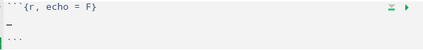
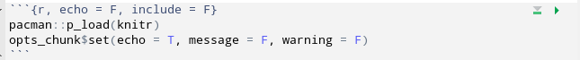

install.packages("rmarkdown")
devtools::install_github("rstudio/quarto")9 Reportes dinámicos
Quarto es una versión avanzada de generación de R Markdown desarrollada por RStudio, que admite múltiples lenguajes y ofrece numerosas características y capacidades nuevas. Al igual que R Markdown, Quarto utiliza Knitr para ejecutar código R y, por lo tanto, puede renderizar la mayoría de los archivos Rmd existentes sin necesidad de modificaciones.
Quarto permite crear documentos interactivos y dinámicos que combinan texto formateado con bloques de código ejecutable en varios lenguajes, incluido R. Esto proporciona a los usuarios una forma poderosa y flexible de generar informes, presentaciones y documentos que incluyen análisis de datos en tiempo real y visualizaciones interactivas.
Además, Quarto ofrece una gama de nuevas características y funcionalidades que permiten a los usuarios crear documentos más complejos y personalizables. Puedes aprovechar estas nuevas capacidades para crear informes y documentos altamente personalizados que se adapten a tus necesidades específicas.
10 Instalación
Abre RStudio y ejecuta el siguiente comando para instalar el paquete rmarkdown:
11 Nuevo documento
Para crear un nuevo documento, simplemente se accede desde el menú File, New file, Quarto document. En la ventana que aparece, se pude modificar el titulo del documento y seleccionar el tipo de documento que vamos a generar luego, por ejemplo html.

12 Bloques de Código
Los bloques de código que utilizan llaves alrededor del nombre del lenguaje (por ejemplo, ```{r}) son ejecutables y serán ejecutados por Quarto durante la renderización.
---
título: "Demostración de reportes con quarto"
autor: "Estadística FCA UNL"
fecha: "20/11/2023"
---13 Generar reporte Rendering
Cuando se procesa un documento Quarto, los bloques de código R se ejecutan automáticamente. Puede renderizar documentos en Quarto de varias maneras, la más sencilla es usando el botón Renderizar en RStudio.
La sección superior de un archivo .qmd como se muestra en RStudio. Hay una barra de herramientas justo encima del documento que contiene varias opciones, incluido Render. Hay una flecha azul segmentada y estilizada que apunta a la palabra.

El botón Renderizará el primer formato listado en el documento YAML. Si no se especifica ningún formato, se representará en HTML.
14 Modos de visualización
Los documentos Markdown se pueden editar en modo fuente: Source o Visual. Para cambiar al modo visual para un documento determinado, use el botón Source o Visual en la parte superior izquierda de la barra de herramientas del documento (o alternativamente el método abreviado de teclado ⌃⇧ F4):

Puede cambiar entre el modo Source o Visual en cualquier momento.
15 Usando el editor
15.1 Atajos de teclado
Hay atajos de teclado para todas las tareas básicas de edición. El modo visual admite tanto atajos de teclado tradicionales como atajos de rebajas. Por ejemplo, incluya texto en ****negrita**** entre asteriscos o escriba ## y presione espacio para crear un encabezado de segundo nivel. Ejemplos de atajos:
| Comando | Atajo teclado | Atajo Markdown |
| Negrita | Ctrl + B | **bold** |
| Italica | Ctrl + I | *italic* |
| Código | Ctrl + D | ~~strike~~ |
| Tachado | ~sub~ | |
| Superíndice | ^super^ | |
| Encabezado 1 | Ctrl + Alt + 1 | # |
| Encabezado 2 | Ctrl + Alt + 2 | ## |
| Encabezado 3 | Ctrl + Alt + 3 | ### |
| Link | Ctrl + K | <href> |
16 Opciones de fragmentos de código
La salida del fragmento se puede personalizar con opciones de knitr, argumentos establecidos en el {} del encabezado de un fragmento. Arriba, utilizamos cinco argumentos:

include = FALSEevita que el código y los resultados aparezcan en el archivo terminado. R Markdown todavía ejecuta el código en el fragmento y los resultados pueden ser utilizados por otros fragmentos.echo = FALSEevita que el código, pero no los resultados, aparezcan en el archivo terminado. Esta es una forma útil de incrustar figuras.message = FALSEevita que los mensajes generados por código aparezcan en el archivo terminado.warning = FALSEevita que las advertencias generadas por el código aparezcan en el archivo terminado.fig.cap = "..."agrega un título a los resultados gráficos.
Los anteriores se pueden incluir indicando TRUE en el que corresponda.
17 Opciones globales
Para configurar opciones globales que se apliquen a cada fragmento de su archivo, llame a knitr::opts_chunk$set en un fragmento de código. Knitr tratará cada opción que pase a knitr::opts_chunk$set como un valor predeterminado global que se puede sobrescribir en encabezados de fragmentos individuales.
